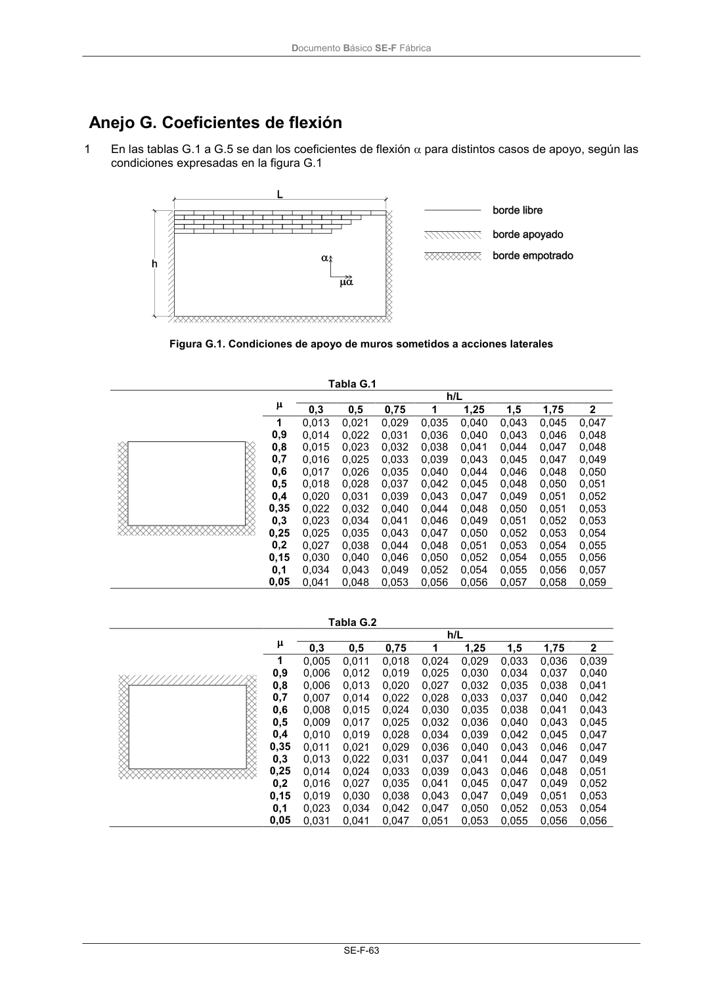

DB-SE-F · Anejo G. Coeficientes de flexión · versión 2019-12-20
SHA256: e3e0805c3b4c307519c26dc34c3fdbf143d842edd013c91b0f52d2c73403d91c · página física 67 de 70 · métodos de encabezado
solo si están cotejados.
Formatos: Markdown · JSON de bloques · PDF p. 67 · imagen PNG
Documento Básico SE-F Fábrica SE-F-63 Anejo G. Coeficientes de flexión 1 En las tablas G.1 a G.5 se dan los coeficientes de flexión para distintos casos de apoyo, según las condiciones expresadas en la figura G.1 Figura G.1. Condiciones de apoyo de muros sometidos a acciones laterales Tabla G.1 (D) h/L 0,3 0,5 0,75 1 1,25 1,5 1,75 2 1 0,013 0,021 0,029 0,035 0,040 0,043 0,045 0,047 0,9 0,014 0,022 0,031 0,036 0,040 0,043 0,046 0,048 0,8 0,015 0,023 0,032 0,038 0,041 0,044 0,047 0,048 0,7 0,016 0,025 0,033 0,039 0,043 0,045 0,047 0,049 0,6 0,017 0,026 0,035 0,040 0,044 0,046 0,048 0,050 0,5 0,018 0,028 0,037 0,042 0,045 0,048 0,050 0,051 0,4 0,020 0,031 0,039 0,043 0,047 0,049 0,051 0,052 0,35 0,022 0,032 0,040 0,044 0,048 0,050 0,051 0,053 0,3 0,023 0,034 0,041 0,046 0,049 0,051 0,052 0,053 0,25 0,025 0,035 0,043 0,047 0,050 0,052 0,053 0,054 0,2 0,027 0,038 0,044 0,048 0,051 0,053 0,054 0,055 0,15 0,030 0,040 0,046 0,050 0,052 0,054 0,055 0,056 0,1 0,034 0,043 0,049 0,052 0,054 0,055 0,056 0,057 0,05 0,041 0,048 0,053 0,056 0,056 0,057 0,058 0,059 Tabla G.2 (H) h/L 0,3 0,5 0,75 1 1,25 1,5 1,75 2 1 0,005 0,011 0,018 0,024 0,029 0,033 0,036 0,039 0,9 0,006 0,012 0,019 0,025 0,030 0,034 0,037 0,040 0,8 0,006 0,013 0,020 0,027 0,032 0,035 0,038 0,041 0,7 0,007 0,014 0,022 0,028 0,033 0,037 0,040 0,042 0,6 0,008 0,015 0,024 0,030 0,035 0,038 0,041 0,043 0,5 0,009 0,017 0,025 0,032 0,036 0,040 0,043 0,045 0,4 0,010 0,019 0,028 0,034 0,039 0,042 0,045 0,047 0,35 0,011 0,021 0,029 0,036 0,040 0,043 0,046 0,047 0,3 0,013 0,022 0,031 0,037 0,041 0,044 0,047 0,049 0,25 0,014 0,024 0,033 0,039 0,043 0,046 0,048 0,051 0,2 0,016 0,027 0,035 0,041 0,045 0,047 0,049 0,052 0,15 0,019 0,030 0,038 0,043 0,047 0,049 0,051 0,053 0,1 0,023 0,034 0,042 0,047 0,050 0,052 0,053 0,054 0,05 0,031 0,041 0,047 0,051 0,053 0,055 0,056 0,056
